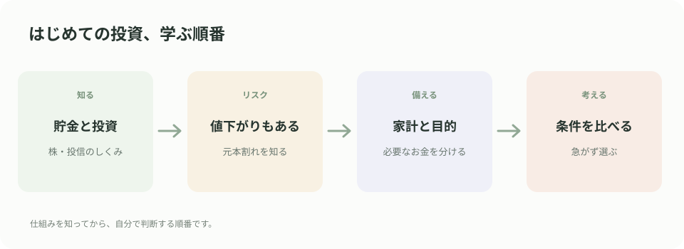

家計と目的を整理する
毎月の収支、緊急時に必要なお金、いつ使う予定かを確認。生活費を投資に回さない計画を考えます。
株ってなに？お金は減るの？中学生にも伝わる言葉で、いちから説明します。
NISAってなに？株ってどう買うの？
そんな疑問を、大学生の目線でひとつずつ解きほぐす入門ガイドです。
知識ゼロから、自分で判断できるところまで。
まず知る、リスクを知る、準備する。それから自分で考えます。

順番に読めば、投資の全体像がつかめます。
気になるテーマから読んでも大丈夫。
気になる項目から読み進められます。
投資は、将来に向けてお金を育てる方法のひとつです。値動きがあるので、元本が減ることもあります。仕組みを知り、生活費や近く使うお金と分けて考えることが大切です。
どの方法にも損失の可能性があります。利益を保証するものではありません。
制度のルールは変わることがあります。
申し込み前に金融庁の最新情報を確認しましょう。
通常、株式や投資信託の利益には税金がかかります。NISA口座で対象商品に投資した場合、制度の範囲内で利益が非課税になります。投資そのものの損失リスクがなくなるわけではありません。
金融庁「NISAを知る」を確認 ↗口座を作ることがゴールではありません。
納得してから次に進みましょう。
毎月の収支、緊急時に必要なお金、いつ使う予定かを確認。生活費を投資に回さない計画を考えます。
NISAは制度、株式や投資信託は金融商品です。値動き・手数料・元本割れの可能性を理解します。
取扱商品、手数料、サポート、使いやすさを公式情報で比較。特定の会社をおすすめするものではありません。
本人確認書類やマイナンバーなどを準備し、条件を確認して自分で申し込みます。口座開設後も、すぐ取引する必要はありません。
18歳未満の方へ 金融機関によって申し込み条件・手続きが異なります。年齢を偽って申し込まず、保護者と金融機関の公式案内を確認してください。
投資信託は多くの資産をまとめた商品、株式は企業の持分です。注文方法には、価格を指定しない「成行」や価格を指定する「指値」などがあります。操作前に、数量・価格・手数料・注文内容を確認しましょう。
金融庁「資産形成の基本」を読む ↗運用益を含めない単純な合計額です。将来の利益や結果を予測するものではありません。
運用成果を含まない計算です。
わからないことをひとつずつ調べて、自分のペースで学んでいきましょう。